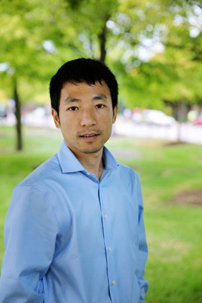

|
Kunpeng Zhang (KZ)
|
 |
Contact:
Van Munching Hall, 4316
7699 Mowatt Ln
College park, MD 20742
Tel: 301-405-0702
Email: kpzhang AT umd DOT edu
|
Biography
I am an Assistant professor in the department of Decision, Operations & Information Technologies, Robert H. Smith School of Business, affiliated with MTI and AMSC at the University of Maryland, College park. Before I joined the University of Maryland, I was an Assistant professor at University of Illinois, Chicago for two years after graduated from Northwestern University. I was a co-faculty champion of iTBT fellow program at Smith School.
My research focuses on developing and applying Machine Learning algorithms to analyze unstructured data for better decisions in online social media platforms. Specifically, I am interested in representation learning.
Three Postdoc positions available - data science. Please email me your CV if interested.
RA positions available for current UMD students - please email me your CV if interested.
Awards
Professional service
- Program co-chair, WITS 2021
- Associate Editor, INFORMS Journal on Computing
- Associate Editor, ICIS, 2016, 2017, 2018, 2020
- Session chair of Social Media Analytics at INFORMS 2015
- Editorial Board Member, Information & Management, Special Issue on Big Data Commerce, 2015
- Program Committee Member for
SDM 2022, AAAI 2021, NAACL-HLT 2021, ACL 2021, KDD 2015-2022, IUI 2015-2021, CIST 2017-2020, IEEE BigData 2014-2021, WITS 2016, 2019-2020, DS2017-2019, CSWIM 2015-2019, MOD 2015-2016, PACIS 2016
Referee
- PAKDD 2010, ICDM 2010, CIKM 2012, CIKM 2013, CIKM 2013 Workshop, ICWSM 2014, AAAI 2014, AMCIS 2014, WIBF 2014, ICIS 2014, AAAI 2015, AMCIS 2015, IUI 2015, Transactions on Parallel and Distributed Systems (TPDS), Journal of Information Technology and Management, Journal of Social Network Analysis and Mining, Integrating Materials and Manufacturing Innovation Journal, ACM Transactions on Intelligent Systems and Technology (TIST), Data Mining and Knowledge Discovery (DMKD), International Journal of Multimedia Information Retrieval, Knowledge and Information Systems (KAIS), PLOS One, IEEE Journal - Sensors, IEEE Transactions on Knowledge and Data Engineering (TKDE), IEEE Intelligent Systems, Computing-Springer, Management Information System Quarterly (MISQ), Decision Sciences, Knowledge and Information Systems (KAIS), IEEE Transactions on Big Data, IEEE Transactions on Service Computing, Information & Management, Electronic Commerce Research, Information System Research (ISR), Journal of Interactive Marketing, Journal of the Association for Information Science and Technology (JAIST), INFORMS Journal on Computing (JOC), European Journal of Information Systems (EJIS), Production and Operations Management (POM), Management Science, Organization Science, Journal of Management Information Systems (JMIS)
Invited talk:
- 2022: Texas A&M University (scheduled)
- 2021: Kellogg School of Management, Northwestern University; ISOM, Hong Kong University of Science and Technology; Computing, National University of Singapore
- 2019: Eli Broad College of Business, Michigan State University
- 2018: Robinson College of Business, Georgia State University; Simon Business School, University of Rochester; Information Systems and Operations Management, University of Florida
- 2017: University of Illinois at Urbana-Champaign.
- 2016: University of Wisconsin, Milwaukee.
- 2015: DePaul University; University of Illinois at Urbana-Champaign; IBM Research.
|